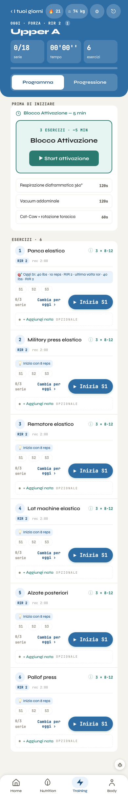
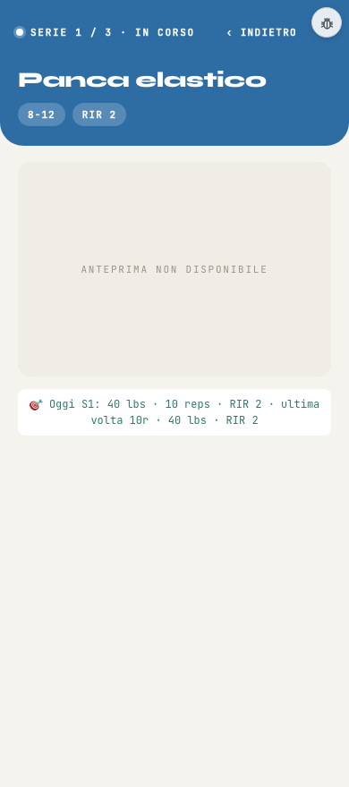
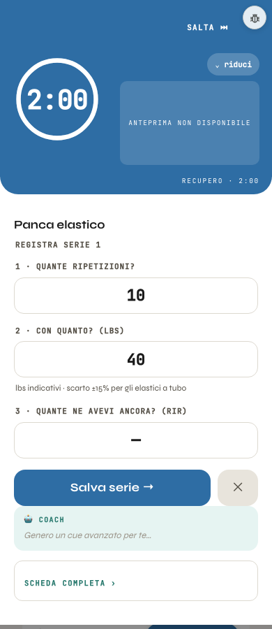

A sinistra la Seduta vera di oggi (banco, 390 px, veste accesa, dati di prova del 4 ottobre), a destra lo schizzo snellito. Ignazio, 30 ottobre: «ancora mi compare l'ultima volta e la prima che devo fare». E il 27: «durante l'esercizio non si può stare a leggere, si può guardare un'immagine». Quindi: meno parole, una riga sola per i numeri, la GIF grande. I tondi verdi 1 rimandano alle 8 note del giro 1. Le regole dell'allenamento non cambiano: gli stessi numeri, scritti una volta sola.
La riga dei numeri: una sola, sempre
Oggi uguale all'ultima volta
Come l'ultima volta · 40 lbs × 10
Oggi si sale (il carico o le ripetizioni)
45 lbs × 10 · +5 lbs rispetto all'ultima volta
Oggi si scende (scarico, rientro)
30 lbs × 8 · scarico, −10 lbs rispetto all'ultima volta
Mai fatto prima
Si parte da 8 ripetizioni
Il RIR non si ripete qui: è nella testata, una volta per tutta la seduta. Oggi le due righe («Oggi S1: 40 lbs · 10 reps · RIR 2 · ultima volta 10r · 40 lbs · RIR 2» e «Inizia con 8 reps») diventano questa sola, uguale nell'elenco e nella serie in corso.
1 DI 3La seduta, prima di iniziare
Oggi

Proposta
🔥 21⚖ 74 kg
OGGI · FORZA · RIR 2 PER TUTTA LA SEDUTA 1
Upper A
0/18serie
00'00''tempo
6esercizi
ProgrammaProgressione
Prima di iniziare
Blocco Attivazione3 esercizi · 5 min · l'elenco si apre al tocco
2
Esercizi · 6
1
Panca elastico
3 × 8-12 · rec 2:00
Come l'ultima volta · 40 lbs × 10 3
0/3
2
Military press elastico
3 × 8-12 · rec 2:00
Si parte da 8 ripetizioni
0/3
Cambia per oggi
Aggiungi una nota
Scheda dell'esercizio
3
Rematore elastico
3 × 8-12 · rec 2:00
Si parte da 8 ripetizioni
0/3
4
4
Lat machine elastico
3 × 8-12 · rec 2:00
Si parte da 8 ripetizioni
0/3
… Alzate posteriori, Pallof press: uguali
Home
Nutrition
Training
Body
Cosa si toglie
«RIR 2» resta solo in testata, non più su ogni esercizio.
L'attivazione è una riga sola con «Inizia»: i suoi 3 esercizi si vedono quando parte (o al tocco), non due volte nella pagina.
«Oggi S1: …» e «Inizia con 8 reps» diventano la stessa riga, scritta allo stesso modo (vedi sopra).
«Cambia per oggi» e «+ Aggiungi nota» escono dalle righe: stanno nel tasto ⋯ (aperto qui sul n. 2), con la scheda dell'esercizio. Il tasto «Inizia» resta solo sul prossimo esercizio, evidenziato; gli altri si aprono toccando la riga.
Da 6 righe di testo per esercizio a 3. La pagina si accorcia di circa metà.
2 DI 3La serie in corso
Oggi

Proposta · con la GIF
SERIE 1 DI 3 · RIR 2
Panca elastico
La GIF, a tutta larghezzacirca 360 × 420 px: metà schermo e oltre, si guarda senza leggere
40 lbs × 10come l'ultima volta
Proposta · senza GIF 5
SERIE 1 DI 3 · RIR 2
Panca elastico
40 lbs × 10come l'ultima volta
Immagine non ancora pronta per questo esercizio
Cosa si toglie
Senza GIF niente riquadro grigio a mezzo schermo: al suo posto i numeri di oggi, grandi, e una riga piccola che dice che l'immagine manca.
Con la GIF, la GIF prende lo spazio: è la cosa da guardare mentre si fa la serie. Sotto, una riga sola coi numeri (vedi in alto).
«8-12» e «RIR 2» in due bolle diventano «RIR 2» nella riga sopra il nome: il numero di ripetizioni è già nella riga dei numeri.
3 DI 3Il recupero e il registro della serie
Oggi

Proposta
⌄ riduci
2:00RECUPERO
GIF dell'esercizio
Panca elastico · serie 1
1 · Quante ripetizioni?
10reps
2 · Con quanto?
40lbs
3 · Quante ne avevi ancora? (RIR)
–facoltativo
8
Il coach
PIRSI
Genero un cue avanzato per te…
Scheda completa qui anche: lbs indicativi, scarto ±15% per gli elastici a tubo›7
Cosa si toglie
La frase sugli elastici non compare più sotto il carico a ogni serie: va nella scheda dell'esercizio, dove si legge una volta.
La ✕ senza nome accanto a «Salva serie» diventa «Chiudi senza salvare», scritto, sotto il tasto. «Salva serie» prende tutta la larghezza.
Le tre domande, i valori già compilati e il coach restano come sono.
Tre cose da decidere, Ignazio
«Inizia» solo sul prossimo esercizio, e gli altri si aprono toccando la riga? Oppure «Inizia» resta su ogni riga, piccolo.
Quando si sale o si scende, la riga dice la differenza («+5 lbs rispetto all'ultima volta»). Basta così, o vuoi vedere anche i numeri dell'ultima volta al tocco?
Senza GIF: i numeri grandi al posto del riquadro grigio (come qui), oppure niente del tutto?
Quando si costruisce
Tutto dietro html.v5: a veste spenta la Seduta resta identica al pixel. I numeri restano quelli di oggi: l'obiettivo della prima serie e la serie dell'ultima volta vengono dalle stesse funzioni (obiettivoPrimaSerie, serieDaRipetere); cambia solo come si scrivono, in una riga. Nessuna regola di allenamento toccata, nessuna lettura o scrittura nuova.